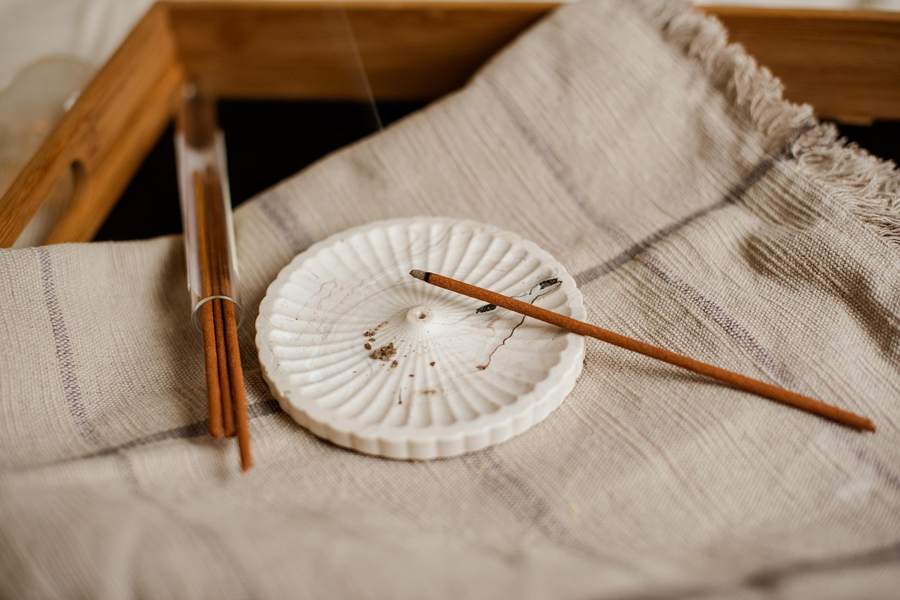
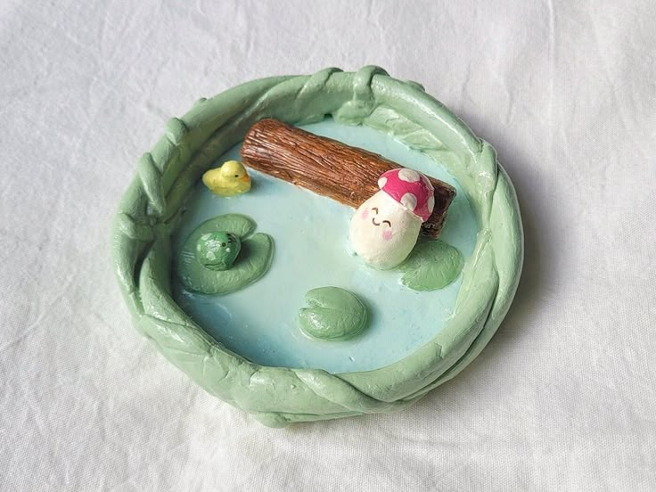
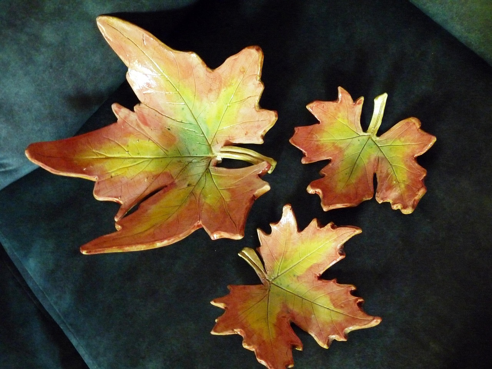
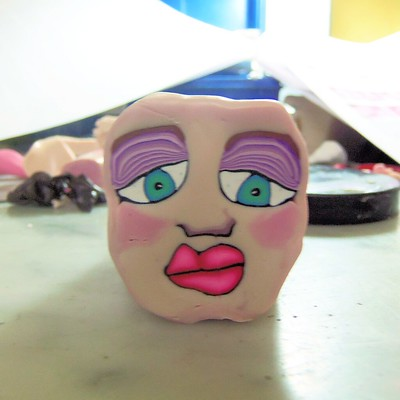
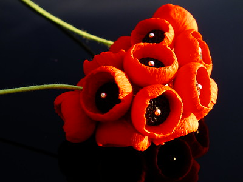

:: Clay ::
Come and check out these captivating clay creations! Sculpt yourself in the world of clay crafting!
Projects

Incense Holder
This incense holder is a beautiful and functional piece of clay art. It's beginner-friendly and can be made in any shape or design you like!

Trinket Dish
Trinket dishes are perfect for storing your small treasures and bringing a touch of creativity to your home!

Ceramic Leaf Dish
These ceramic leaf dishes are fun and creative for any season! Just pick up a leaf and get crafting!

Custom Face Mugs
Custom face mugs are a fun and creative way to bring some personality to your beverage routine!

Poppy Sculpture
This poppy sculpture is a beautiful and meaningful piece of clay art. It's a great project for intermediate sculptors looking to challenge themselves and create something truly special.